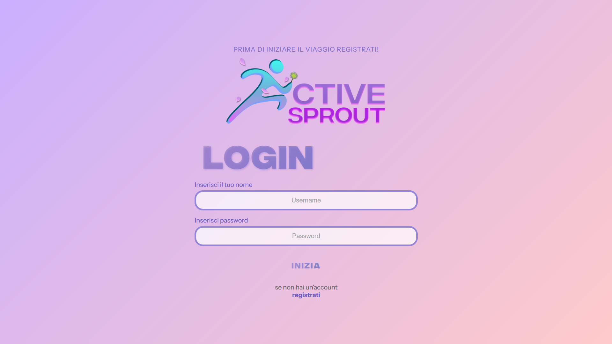
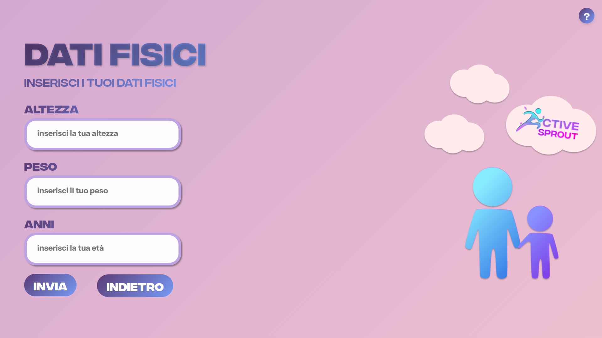
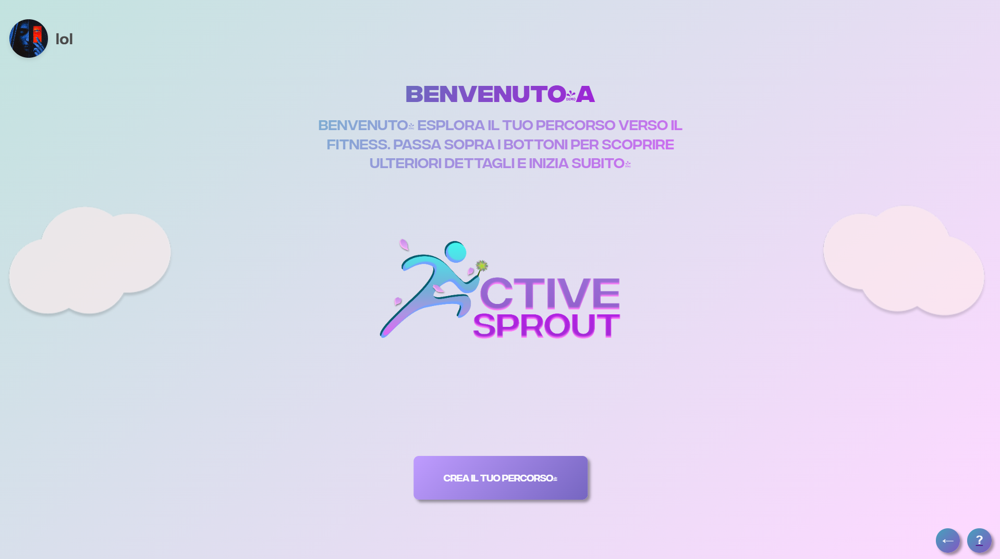
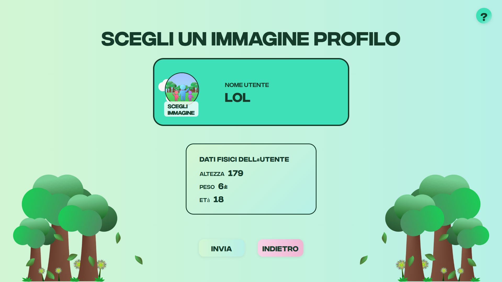
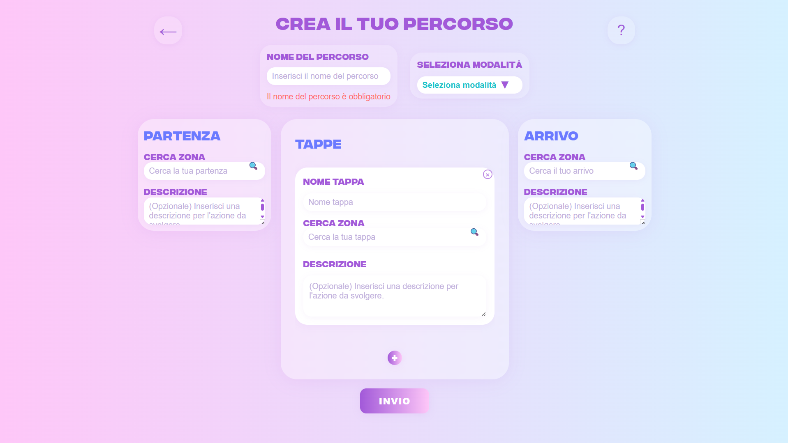
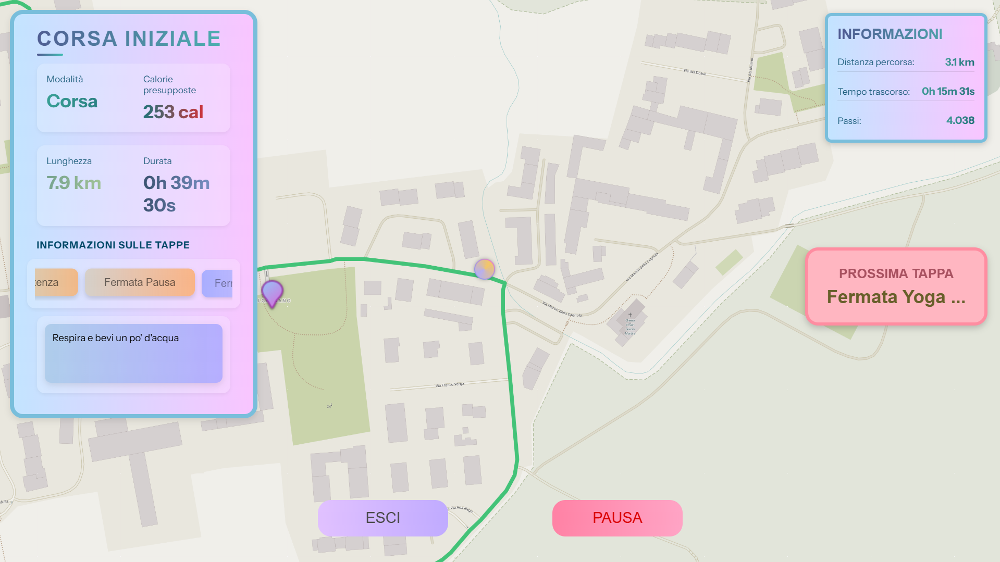

Manuale d'Uso
Questo manuale ti guiderà attraverso tutte le funzionalità di Active Sprout, aiutandoti a sfruttare al massimo la piattaforma per raggiungere i tuoi obiettivi fitness.

Schermata di Login
La schermata di login permette agli utenti già registrati di accedere all'applicazione Active Sprout inserendo le proprie credenziali (username e password). Se non hai ancora un account, puoi registrarti tramite il link apposito.
In alto è presente un messaggio motivazionale che invita a registrarsi per iniziare il proprio percorso fitness. Al centro della schermata si trova il logo di Active Sprout, che rafforza l'identità visiva dell'applicazione.
Come utilizzarla
- Inserisci il tuo nome utente nel campo "Username".
- Digita la password nel campo "Password".
- Premi il pulsante "INIZIA" per accedere all'applicazione.
- Se non hai un account, clicca su "registrati" per crearne uno nuovo.

Dati Fisici
Questa schermata ti permette di inserire i tuoi dati fisici fondamentali: altezza, peso ed età. Queste informazioni sono essenziali per personalizzare il tuo percorso fitness e ricevere suggerimenti su misura.
Come utilizzarla
- Inserisci la tua altezza nel campo apposito.
- Inserisci il tuo peso.
- Indica la tua età.
- Premi "INVIA" per salvare i dati e proseguire.

Benvenuto/a
Dopo aver effettuato l'accesso e inserito i tuoi dati, verrai accolto da una schermata di benvenuto. Qui puoi esplorare il tuo percorso verso il fitness, scoprire le funzionalità principali e iniziare subito a creare il tuo percorso personalizzato.
Come utilizzarla
- Leggi il messaggio di benvenuto e premi "CREA IL TUO PERCORSO" per iniziare.

Scegli un'immagine profilo
In questa schermata puoi scegliere la tua immagine profilo e visualizzare un riepilogo dei tuoi dati fisici inseriti. Questo ti permette di personalizzare ulteriormente la tua esperienza su Active Sprout.
Come utilizzarla
- Clicca su "SCEGLI IMMAGINE" per caricare una foto profilo.
- Controlla che i dati fisici siano corretti, poi premi "INVIA" per confermare.

Crea il tuo percorso
Questa schermata ti permette di creare un percorso fitness personalizzato, scegliendo la modalità, il nome del percorso, la partenza, le tappe intermedie e l'arrivo. Puoi aggiungere descrizioni e dettagli utili per ogni tappa.
Come utilizzarla
- Compila tutti i campi richiesti per il percorso e le tappe.
- Premi "INVIO" per salvare e iniziare il percorso.

Allenamento in corso
Durante l'allenamento, la schermata mostra la mappa del percorso, le tappe, le informazioni in tempo reale su distanza, tempo, passi e calorie. Puoi mettere in pausa, uscire o vedere la prossima tappa prevista.
Come utilizzarla
- Segui il percorso sulla mappa e monitora i tuoi progressi.
- Utilizza i pulsanti "PAUSA" o "ESCI" se necessario.